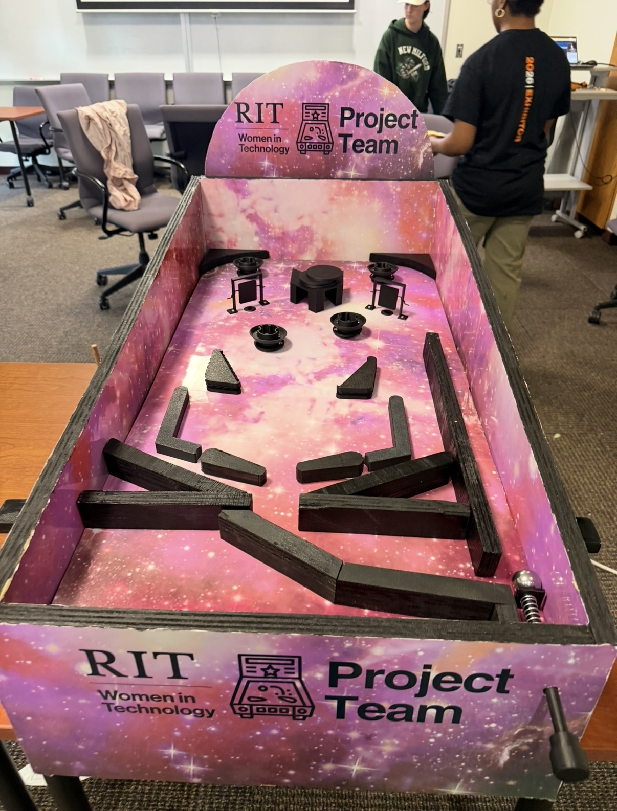
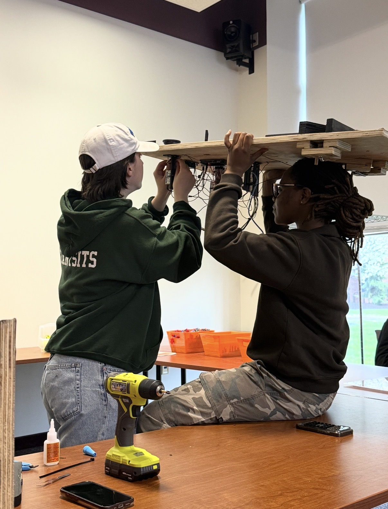

Pinball Machine
A functional pinball machine taken through its full design-to-build cycle, from SolidWorks model to a working prototype presented at Imagine RIT.


What I did
I contributed to the full design-to-build cycle of a functional pinball machine as part of the Women in Technology project team. I modeled mechanical components in SolidWorks, supported assembly, and helped bring the machine from CAD model to a physical, playable prototype.
The outcome
We presented the completed prototype at Imagine RIT, the university's public innovation showcase. The project was a full arc from digital model to a working machine an audience could actually play. My favorite part was watching the kids light up when they stepped up to play it, seeing something we designed and built spark that kind of excitement made the whole thing worth it.
← All projects